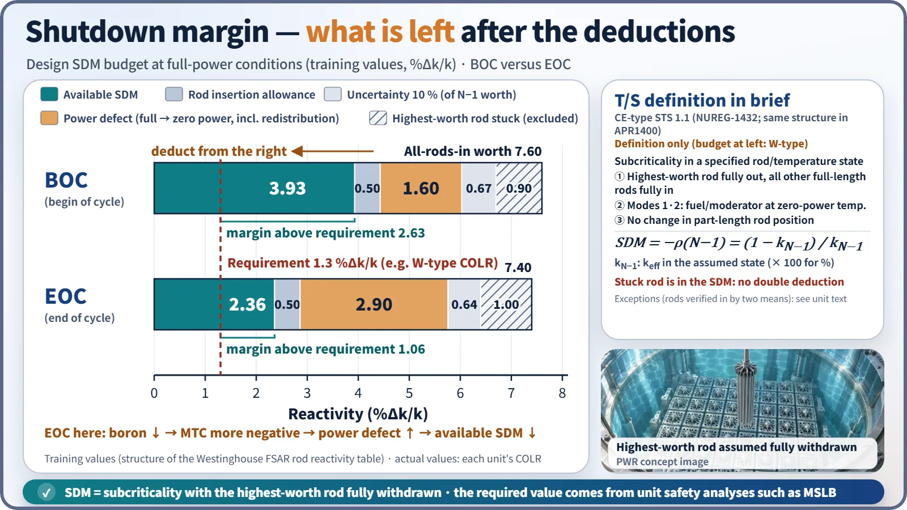
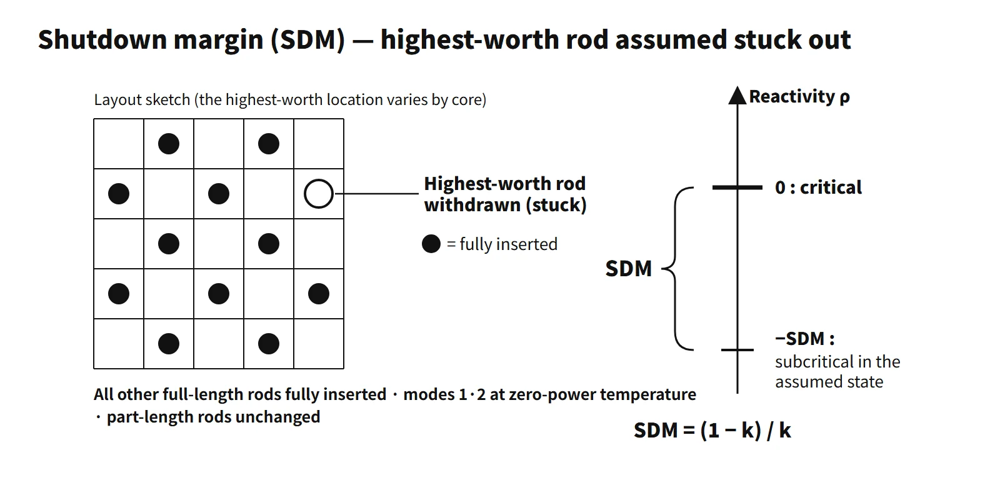

Reactor Physics & Kinetics · C-RX-013
Shutdown Margin (SDM) — The Subcriticality Left Even with the Highest-Worth Rod Stuck Out
The subcriticality that remains with the highest-worth rod stuck out, how it is budgeted at power and which accident sets the required value.
Shutdown margin (SDM) is the amount by which the reactor is subcritical, or would be subcritical from its present condition, assuming that "the single control rod of highest reactivity worth is fully withdrawn, all other rods are fully inserted, and (in modes 1 and 2) the fuel and moderator temperatures are changed to the zero-power level"; it is an instantaneous amount of reactivity. As a reactivity, ρ = −SDM; its magnitude is written in %Δk/k or pcm.
Principle and mechanism
The three assumptions in the technical specifications definition
Section 1.1 (Definitions) of the technical specifications contains three assumptions. The structure below follows NUREG-1432 (the CE-type STS), which APR1400 technical specifications share.
- Highest-worth rod stuck: the single rod of highest reactivity worth remains fully withdrawn and all other full-length rods (shutdown and regulating) are fully inserted. If all rods are verified fully inserted by two independent means, the stuck rod need not be considered. Conversely, if any other rod cannot be inserted, its worth must also be subtracted.
- Zero-power temperature: in modes 1 and 2, the fuel and moderator temperatures are assumed to change to the nominal zero-power design level, because the power defect comes back on shutdown.
- Part-length rod position unchanged: this item exists only in the CE-type definition.
Because it is an "instantaneous" amount of reactivity, the present xenon is used. The surveillance calculation includes boron concentration, rod positions, RCS average temperature, burnup, xenon and samarium concentrations, and temperature coefficients. The "xenon-free, 68 °F" assumption belongs to the BWR STS (NUREG-1433/1434) and must not be mixed into a PWR evaluation. The shutdown margin in the textbook (Duderstadt & Hamilton, Table 14-1) is based on all control elements inserted, which differs from the technical specifications definition.
Defining equation and a calculation trap
- SDM = −ρ(N−1) = (1 − kN−1)/kN−1, where kN−1 is keff with the highest-worth rod withdrawn.
- For k = 0.987, 1 − k = 0.0130, but SDM = 0.0130/0.987 = 0.01317 (1,317 pcm).
- 1.3 %Δk/k = 1,300 pcm ≈ $2.0 (assuming β = 0.0065).
How SDM is counted during operation
At power the core is critical, so SDM is counted as "the negative reactivity the rods can supply minus the positive reactivity that will come back on shutdown". The rod reactivity requirement table in Westinghouse-type FSARs has this structure:
Available SDM = (total rod worth − highest-worth stuck rod) × (1 − uncertainty) − (power defect + rod insertion allowance)
The order is: remove the stuck rod → apply the uncertainty reduction → subtract the power defect and insertion allowance. The stuck-rod loss is the reactivity difference between all rods in and N−1 rods in at the same state. The power defect includes the Doppler and moderator effects plus void and power-redistribution effects; the rod insertion allowance (RIA) is the worth already spent by the rod insertion permitted during operation. The 10 % uncertainty is not a universal constant but a value from the design methodology.
With training example values (%Δk/k):
| Item | BOC | EOC |
|---|---|---|
| All-rods-in worth | 7.60 | 7.40 |
| Highest-worth stuck rod | 0.90 | 1.00 |
| Uncertainty 10 % | 0.67 | 0.64 |
| Power defect (full power → zero power) | 1.60 | 2.90 |
| Rod insertion allowance | 0.50 | 0.50 |
| Available SDM | 3.93 | 2.36 |
| Margin above requirement (1.3) | 2.63 | 1.06 |
At EOC the boron concentration is low, so the moderator temperature coefficient (MTC) is more negative and the positive reactivity entering as the core cools from full to zero power (the power defect) is larger. In this example the growth of the EOC power defect drives the drop in available SDM. Rod worth and stuck-rod worth also change with burnup, however, so the minimum point is confirmed by core design calculations.

Changes with burnup and during shutdown
Right after shutdown the inserted rods give a large SDM, but cooldown (negative MTC → positive reactivity) and xenon decay (positive reactivity) eat into it. That is why boron is raised to the cold-shutdown concentration before cooldown begins.
What it means in a plant
What it guarantees: an initial condition of the safety analysis
The STS Bases state that the SDM requirement ensures three things:
- The reactor can be made subcritical from all operating conditions, transients and design basis events.
- The reactivity transients of postulated accidents are controllable within acceptable limits.
- The reactor is maintained sufficiently subcritical to preclude inadvertent criticality in the shutdown condition.
Because SDM is an initial condition assumed in the accident analyses, it becomes an LCO under Criterion 2 of 10 CFR 50.36(c)(2)(ii).
The event that sizes it: EOC zero-power MSLB
In modes 1–4 the event that sets the requirement is usually a main steam line break (MSLB). Recriticality is judged from the net reactivity:
ρ(t) = −SDMHZP + Δρmoderator(t) + Δρfuel(t) + Δρboron(t) (conceptual budget from HZP; other effects omitted)
ρ = 0 means critical; ρ > 0 means supercritical (return to power). The moderator term is the overcooling, the fuel term is Doppler, and the boron term is the safety-injection boric acid (negative).
- EOC: the MTC is most negative, so the overcooling reactivity is largest.
- HZP: there is no power defect, so the initial SDM is exactly the technical specifications minimum, and the Doppler cushion is small.
- No double deduction: the stuck rod is already reflected in the SDM, so its worth is not subtracted again in the budget. For the same reason the full-to-zero-power defect included in the SDM is not added again. The stuck rod is used again only in the power-distribution (local peaking) evaluation.
- Example: with αM = −50 pcm/°C, a 60 °C cooldown gives +3,000 pcm, which exceeds 1,300 pcm. Boric acid injection and Doppler feedback limit the return-to-power level.
At low temperature, as in mode 5, a boron dilution event sets the requirement. SRP 15.4.6 requires at least 30 minutes in refueling mode and 15 minutes in other modes from the alarm to loss of SDM for operator action.
Examples of required values
- Westinghouse-type COLR example (Callaway): modes 1–4 1.3 %Δk/k, mode 5 1.0 %Δk/k
- CE-type COLR example (Waterford 3, Cycle 23): with CEAs capable of withdrawal, Tavg > 200 °F 5.15 %Δk/k, at or below 200 °F 2.0 %Δk/k
- The CE-type values are larger because the MSLB overcooling reactivity is larger. Actual values follow each unit's COLR.
Monitoring and verification
- Applicability: Westinghouse-type STS LCO 3.1.1 applies in mode 2 (keff < 1), 3, 4 and 5. In modes 1 and 2 (critical), the shutdown and control bank insertion limits (LCO 3.1.5, 3.1.6) assure the SDM.
- Surveillance frequency: under SR 3.1.1.1, it is verified by calculation every 24 hours that the SDM is within the COLR limit.
- If not met: initiate boration within 15 minutes to restore it.
- Estimated critical condition (ECC/ECP): before startup, the critical boron and rod position are predicted and compared with the actual critical point to verify the core reactivity balance (SR 3.1.2, measured within ±1 %Δk/k of predicted). Only if the prediction holds can the SDM calculated with the same core model be trusted.
- Untrippable rod: subtract its worth as well and recalculate.
Regulatory and design criteria
The criteria below are examples from US NRC practice (standard technical specifications, regulations and review guidance).
| Basis | Key point |
|---|---|
| Technical specifications 1.1 definition, LCO 3.1.1 (APR1400 DC splits it into 3.1.1 and 3.1.2 at Tcold 99 °C) | Definition and LCO; numbers in the COLR |
| 10 CFR 50 Appendix A, GDC 26, 27, 28 | Margin for malfunctions such as stuck rods, cold subcriticality, limits on reactivity accidents |
| 10 CFR 50.36(c)(2)(ii) Criterion 2 | Analysis initial condition → LCO |
| Generic Letter 88-16 | Cycle-specific core limits such as SDM moved to the COLR |
| NUREG-0800 SRP 4.3, 15.1.5, 15.4.6 | Core design, MSLB and boron dilution reviews |
The definition and the GDC have long been stable. The numbers moved from the technical specifications text to the COLR (Generic Letter 88-16), and the APR1400 DC split the LCO in two by coolant temperature. For BWRs, TSTF-535 changed the reference temperature to "68 °F or the more reactive temperature".
Easily confused pairs
| Shutdown margin (T/S) | Textbook shutdown margin | Excess reactivity | Subcriticality (keff basis) | |
|---|---|---|---|---|
| Rod assumption | Highest-worth rod out | All control elements in | All out | Actual positions |
| Temperature | Present (zero power in modes 1·2) | Specified state | Specified state | Actual |
| Sign | Size of subcriticality (+) | + | + | keff < 1 |
| Use | LCO, analysis initial condition | Total worth = ρex + SDM | Cycle budget | Refueling keff ≤ 0.95 |
At the same reference state, total control worth = excess reactivity + shutdown margin.
Key points at a glance
- Definition: the present subcriticality, or the instantaneous reactivity (subcriticality) evaluated in a specified assumed state; ρ = −SDM.
- Assumption 1: the highest-worth rod fully withdrawn (stuck), all others fully inserted.
- Assumption 2: in modes 1·2, fuel and moderator at the zero-power temperature; xenon at its present value.
- Equation: SDM = (1 − kN−1)/kN−1 (not 1 − k).
- At power: (total worth − stuck rod) × 0.9 − (power defect + insertion allowance).
- Basis of the requirement: unit safety analyses, usually the EOC HZP MSLB (MTC most negative); boron dilution at low temperature.
- What it guarantees: subcriticality can be reached, accident reactivity transients are controllable, inadvertent criticality is prevented.
- Required value example: W-type 1.3 %Δk/k (mode 5 1.0); values in the COLR.
- Monitoring: calculated every 24 hours; insertion limits in modes 1·2; ECC verifies the core model before startup.
- Relations: total worth = excess reactivity + SDM; no double deduction of the stuck rod in the MSLB budget.
